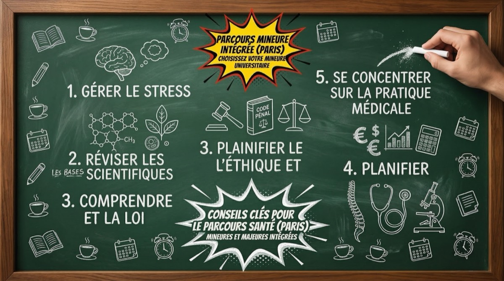

5 conseils pour bien préparer sa rentrée en PASS

La rentrée en PASS (Parcours d'Accès Spécifique Santé) est un moment charnière dans ton parcours vers les études de médecine. Les premières semaines donnent souvent le ton pour le reste de l'année, et les étudiants qui réussissent sont généralement ceux qui ont su anticiper et se préparer avant même le jour J. Bonne nouvelle : avec les bonnes habitudes et un minimum d'organisation, tu peux aborder cette année exigeante sereinement.
On a rassemblé pour toi 5 conseils concrets qui t'aideront à poser des bases solides dès le départ. Que tu sois encore au lycée ou que tu profites de l'été avant ta rentrée, chaque conseil est pensé pour te donner une longueur d'avance sans te surcharger.
1. Organise ton espace de travail et ton matériel
Avant même de penser aux cours, il faut penser à l'environnement dans lequel tu vas passer de longues heures chaque jour. Un espace de travail bien pensé, c'est un gain de temps et d'énergie considérable tout au long de l'année. Ne sous-estime jamais l'impact de ton cadre de travail sur ta concentration et ta productivité.
Le matériel indispensable
- Un ordinateur portable fiable : la majorité des cours sont disponibles en support numérique, et tu auras besoin de prendre des notes, consulter des ressources en ligne et accéder aux plateformes universitaires. Assure-toi qu'il fonctionne bien et qu'il a une autonomie suffisante.
- Une imprimante : beaucoup d'étudiants en PASS préfèrent réviser sur papier. Imprimer tes fiches, tes annales et tes cours te fera gagner du temps plutôt que de courir à la bibliothèque.
- Des fournitures de qualité : stylos de couleur, surligneurs, fiches bristol, classeurs bien étiquetés. Cela peut paraître basique, mais un système de prise de notes clair et structuré t'évitera de perdre du temps à chercher tes cours en période de révisions.
- Un bon casque audio : que ce soit pour écouter des cours en replay ou pour t'isoler du bruit ambiant, c'est un investissement qui vaut le coup.
Un espace calme et dédié
Idéalement, aménage-toi un coin de travail fixe chez toi, que ton cerveau associera automatiquement à la concentration. Éloigne les distractions : range ton téléphone dans un tiroir pendant tes sessions de travail, installe-toi loin de la télé et préviens tes proches de tes horaires d'étude.
Si tu n'as pas d'espace calme chez toi, repère dès la rentrée les bibliothèques universitaires et les salles d'étude sur le campus. Beaucoup d'étudiants en PASS y travaillent très bien.
2. Prends de l'avance sur les bases scientifiques
Le rythme du PASS est intense dès les premières semaines. Les professeurs avancent vite et ne reviennent pas en arrière. Avoir des bases solides dans les matières clés te permettra de suivre les cours sans être perdu et de te concentrer sur la compréhension plutôt que sur la découverte des notions.
Les matières à revoir en priorité
- Biologie cellulaire : revois la structure de la cellule, les organites, la membrane plasmique, le cycle cellulaire et les bases de la génétique moléculaire. C'est l'une des matières les plus lourdes du premier semestre.
- Chimie organique : les mécanismes réactionnels, la nomenclature, les groupes fonctionnels et la stéréochimie sont fondamentaux. Si tu as des lacunes en chimie au lycée, c'est le moment de les combler.
- Physique : l'optique, l'électricité, la mécanique des fluides et les bases de la physique quantique reviennent fréquemment. Revois les formules essentielles et entraîne-toi à les appliquer dans des exercices.
- Biostatistiques : beaucoup d'étudiants découvrent cette matière en PASS. Familiarise-toi avec les probabilités, les lois de distribution, les tests statistiques et la lecture de tableaux de données.
Tu n'as pas besoin de tout maîtriser avant la rentrée. L'objectif, c'est juste d'être à l'aise avec le vocabulaire et les concepts de base pour ne pas décrocher dès le premier cours.
Pour t'aider à évaluer ton niveau actuel, notre Simulateur Parcoursup te permet de visualiser ton profil par rapport aux attendus des différentes facs. C'est un bon point de départ pour savoir où concentrer tes efforts.
3. Mets en place une routine de travail dès le début
La première erreur que commettent beaucoup d'étudiants en PASS, c'est d'attendre les premières semaines pour trouver leur rythme. Résultat : ils accumulent du retard et se retrouvent submergés dès la fin du premier mois. La clé, c'est de définir ta routine avant la rentrée et de t'y tenir dès le premier jour.
Construis ton planning hebdomadaire
- Fixe des horaires réguliers : lève-toi à la même heure chaque jour, y compris le week-end. Le corps et le cerveau fonctionnent mieux avec un rythme stable. Beaucoup d'étudiants qui réussissent en PASS commencent à travailler entre 7h et 8h du matin.
- Planifie tes blocs de travail : alterne entre les cours à revoir, les exercices d'application et les séances de mémorisation. Un bloc de 45 à 90 minutes avec une pause de 10 à 15 minutes est un format qui a fait ses preuves.
- Réserve du temps pour les annales : dès que tu auras accès aux sujets des années précédentes, intègre-les dans ton planning. S'entraîner sur les annales est l'un des meilleurs moyens de progresser.
Les pauses sont essentielles
Travailler 12 heures d'affilée sans lever la tête, ça ne marche pas. Ton cerveau a besoin de pauses régulières pour fixer ce que tu apprends. La technique Pomodoro (25 minutes de travail, 5 minutes de pause) fonctionne bien, mais adapte-la à ton propre rythme si tu préfères des blocs plus longs.
Un truc utile : note tes horaires de travail effectif pendant les deux premières semaines. Tu verras vite quels sont tes créneaux les plus productifs, et tu pourras caler tes matières les plus dures dessus.
Si tu as besoin d'aide pour structurer ton organisation, notre service de coaching personnalisé t'accompagne dans la mise en place d'une méthode de travail adaptée à ton profil et à ta fac.
4. Rejoins le tutorat et les groupes d'entraide
Le PASS est souvent décrit comme une année solitaire et compétitive. En réalité, les étudiants qui réussissent sont rarement ceux qui travaillent seuls dans leur coin. S'entourer, échanger et s'entraider sont des facteurs de réussite aussi importants que le nombre d'heures de travail.
Le tutorat universitaire
La plupart des facultés de médecine proposent un tutorat gratuit organisé par les étudiants de deuxième année et encadré par des enseignants. Ce dispositif inclut généralement des colles (QCM blancs), des séances de correction et des permanences de questions. C'est un outil précieux pour s'entraîner dans les conditions réelles du concours.
- Inscris-toi dès l'ouverture des inscriptions, les places partent vite.
- Assiste à toutes les séances, même si tu penses déjà maîtriser le sujet.
- Utilise les colles pour identifier tes points faibles et ajuster tes révisions.
Les associations étudiantes et les groupes en ligne
Au-delà du tutorat officiel, de nombreuses communautés peuvent t'aider au quotidien :
- Les associations étudiantes : elles organisent des événements, des parrainages et des séances de soutien. L'AFEM, par exemple, propose des ressources et un accompagnement dédiés aux futurs étudiants en santé.
- Les serveurs Discord et groupes Facebook : chaque fac a généralement son propre serveur Discord où les étudiants partagent des fiches, posent des questions et se motivent mutuellement. Rejoins-les dès que possible.
- Les groupes de travail : former un petit groupe de 3 à 5 personnes pour réviser ensemble est extrêmement bénéfique. Expliquer un concept à quelqu'un d'autre est l'un des meilleurs moyens de vérifier qu'on l'a vraiment compris.
Petit conseil au passage : ne choisis pas tes partenaires d'étude uniquement parmi tes amis du lycée. Entoure-toi de gens motivés et réguliers, même si tu ne les connaissais pas avant la rentrée.
5. Prends soin de toi dès le départ
C'est peut-être le conseil le plus important et pourtant le plus négligé. Le PASS dure toute une année. Si tu sacrifies ta santé physique et mentale dès les premières semaines, tu risques de craquer bien avant les examens. Les étudiants qui tiennent sur la durée sont ceux qui intègrent des moments de récupération dans leur routine dès le début.
L'activité physique, un allié sous-estimé
Faire du sport en PASS n'est pas une perte de temps, c'est un investissement. L'activité physique améliore la concentration, réduit le stress et favorise un sommeil de qualité. Même 30 minutes de marche rapide, de course à pied ou de yoga chaque jour peuvent faire une différence significative sur tes performances cognitives.
Le sommeil, non négociable
Ton cerveau consolide les apprentissages pendant le sommeil. Rogner sur tes nuits pour réviser davantage est contre-productif. Vise 7 à 8 heures de sommeil par nuit, avec des horaires réguliers de coucher et de lever. Évite les écrans au moins 30 minutes avant de dormir.
La vie sociale et la santé mentale
- Garde du temps pour tes proches : un repas en famille, une soirée entre amis de temps en temps, un appel téléphonique. Ces moments de déconnexion rechargent vraiment les batteries.
- Il est normal de douter, de se sentir dépassé ou de rater une colle. Ce n'est pas un signe d'échec, c'est le parcours classique d'un étudiant en PASS.
- Si tu en ressens le besoin, les services de santé universitaires, les psychologues du campus et les associations étudiantes sont là pour toi. Demander de l'aide, c'est un signe de lucidité, pas de faiblesse.
Planifie au moins une activité plaisir par semaine dans ton agenda, au même titre qu'une séance de révision. C'est un rendez-vous avec toi-même que tu ne dois pas sacrifier.
Ce qu'il faut retenir
La réussite en PASS ne se résume pas au nombre d'heures passées devant tes cours. C'est un mix entre organisation, méthodes de travail adaptées, entraide et hygiène de vie. En posant ces bases avant même la rentrée, tu pars avec une vraie longueur d'avance.
Et si tu te demandes encore quel parcours choisir entre le PASS et le LAS, ou quelle fac correspond le mieux à ton profil, pense à utiliser notre Quizz x Fac pour y voir plus clair.